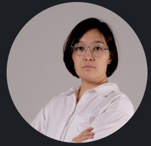

Saniya Nurkenova
Instrumentation Engineer

Objective
Instrumentation Engineer with 11+ years of experience during which acquired knowledge on development of job packs including P&IDs and engineering drawings package . Searching for a Senior or Principal Instrumentation Engineer position where I can use my experience to focus on enhancing reputation and productivity of company by ensuring that quality and accuracy of designs and drawings maintained at a high level.
Skills
- Understanding and producing such drawings as P&IDs, Instrument Location plan and Cable routing layout, process hook up, junction box and marshalling termination, loop drawings, cable schedule, I/O signal list, data sheets for various instruments
- Sizing of control valves
- Calculations of lag and transportation time for analyzers
- Knowledge of various measurements (level, flow, dp, pressure, temperature, vibration)
- Working with Chevron specifications and PIP's
Experience
Senior Instrumentation Engineer - Worley, CA, USA
May, 2023 - Present
- Responsible for Project Specifications – IPCS specification, Design Criteria, Spec for Packaged Equipment, Tagging philosophy, MAC Scope of Work
- Development of Project Design Deliverables – Control System Architecture Diagram, Control and Rack Room Layout, Control Systems Block Diagram, Fiber Optic cable block diagram, RIO cabinet layout
- Preparation and review of Requisitions for various field instruments and valves
- Vendor selection and TBE (Technical bid evaluation) development
- MTO preparation and review
Instrumentation Engineer - Tengizchevroil, Tengiz Field, Kazakhstan
July, 2011 - April, 2023
- Detailed engineering associated with the preparation of job packs for construction execution
- Developed scope of work for the maintenance, repair, and replacement of different process transmitters (pressure, temperature, level, flow, accelerometers), actuated on-off valves, control valves
- Developed, submited for approval and managed authorizations for project funding
- Assisted in the procurement of materials by analyzing vendor quotations and responding to vendor inquiries
- Managed simalteniously 3-5 projects
- Produced and updated reports every 2 week on progress of job packs development for customers (Operations and SIS Automation Team)
Education
- Bachelor of Engineering, Automation Control in Power Engineering - Almaty University of Power Engineering and Telecommunications (2007-2011)
Further Professional Training
- PASS (Process Analyzer Sample Systems) - Swagelok (Nov, 2022)
- Hazardous Area Classification - Baseefa (April, 2013)
- Fisher Control Valves - JHC (May, 2012
Contact Me